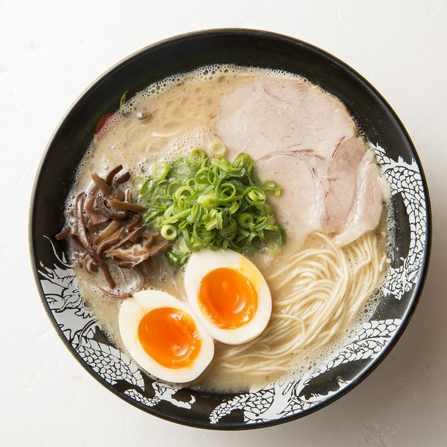

RAMEN - Main Types
Shio Ramen
Ingredients :
- Clear Broth (Chicken or Fish Stock)
- Salt-based Seasoning (Tare)
- Thin Ramen Noodles
- Sliced Pork (Chashu)
- Soft-boiled Egg
- Seasoned Bamboo Shoots (Menma)
- Seaweed (Nori)
- Chopped Scallions
Miso Ramen
Ingredients :
- Rich Broth (Chicken or Pork Stock)
- Miso Paste-based Seasoning (Tare)
- Thick and Wavy Noodles
- Ground Pork
- Corn
- Butter
- Bean Sprouts
- Chopped Green Onions
- Soft-boiled Egg
- Seaweed (Nori)

Shoyu Ramen
Ingredients :
- Clear Broth (Chicken or Fish Stock)
- Soy Sauce-based Seasoning (Shoyu Tare)
- Medium-Thin Wavy Noodles
- Braised Pork (Chashu)
- Seasoned Bamboo Shoots (Menma)
- Soft-boiled Egg
- Seaweed (Nori)

Tonkotsu Ramen
Ingredients :
- Rich Milky Broth (Pork Bones)
- Thin Straight Noodles
- Braised Pork (Chashu)
- Soft-boiled Egg
- Seasoned Bamboo Shoots (Menma)
- Wood Ear Mushrooms (Kikurage)
- Chopped Scallions